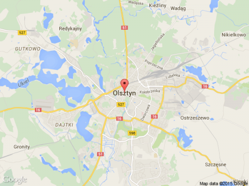

O nas
Nasza Pasja i Działalność
Jesteśmy grupą miłośników i entuzjastów natury, którzy od lat poświęcają się ochronie i badaniu fascynującego świata przyrody,
ze szczególnym naciskiem na żółwie wodne. Nasza misja to promowanie ochrony i zachowania tego wyjątkowego gatunku oraz
edukacja społeczeństwa na temat ich znaczenia dla ekosystemów wodnych.
Żółwie wodne, znane także jako żółwie błotne, są niezwykle ważnymi mieszkańcami naszych siedlisk wodnych.
Wspólnie z innymi organizmami tworzą one delikatną równowagę ekosystemów, wpływając na jakość wody i kontrolując
populacje innych organizmów. Dlatego też skupiamy nasze wysiłki na badaniach i działaniach mających na celu ochronę
ich siedlisk i populacji.
Tu nas znajdziesz
